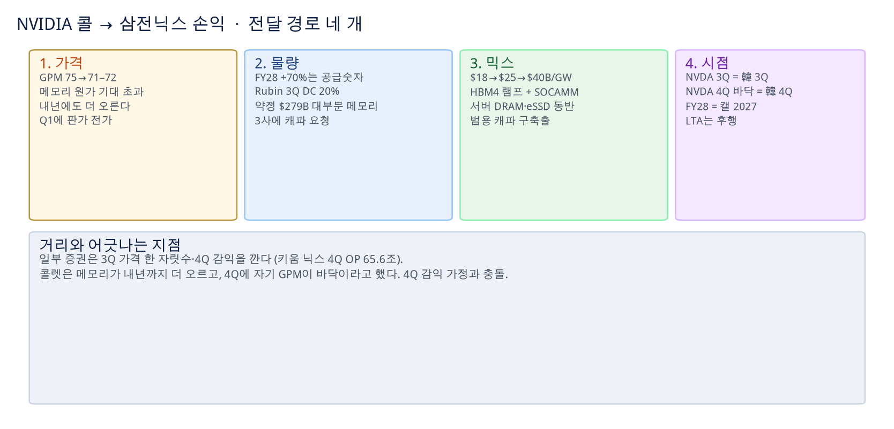
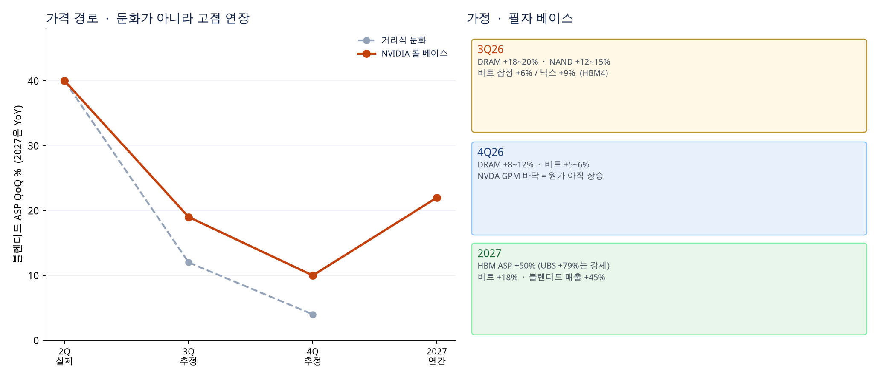
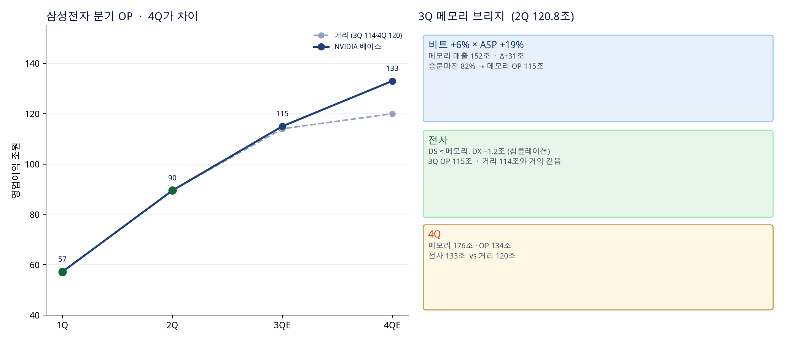
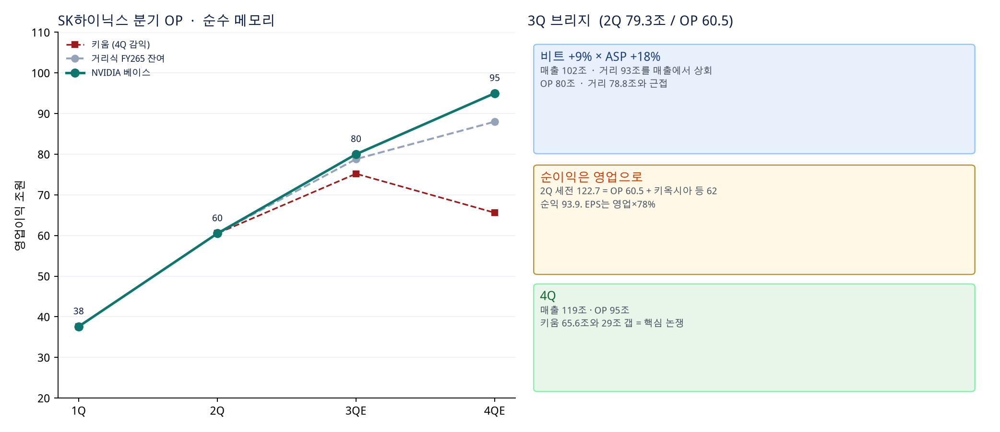
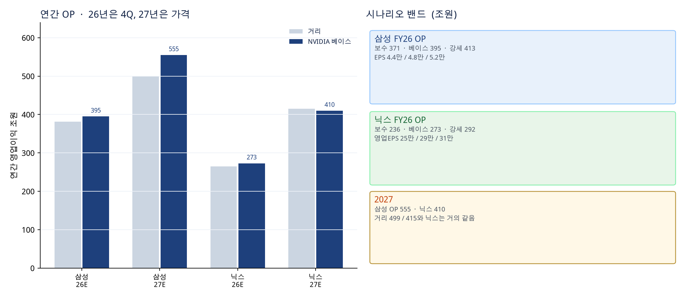
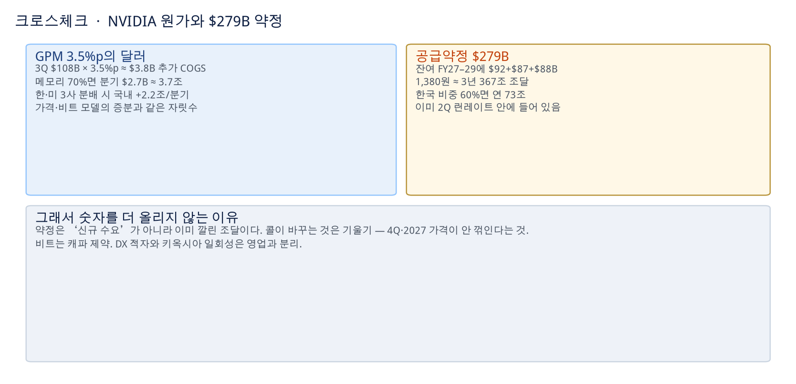
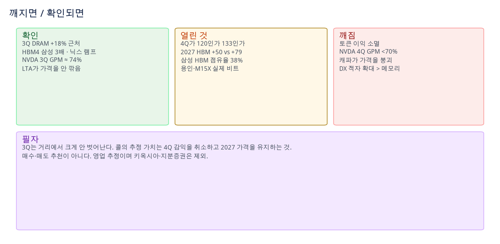

삼전닉스 실적 추정 · NVIDIA FY27 2Q 컨콜 (2026.08.26) 기준 · 매수·매도 추천 아님 · 영업 추정
출발점: 삼성 2Q 매출 171.5조 · OP 89.5조 · 메모리 120.8조 / 닉스 매출 79.3조 · OP 60.5조. 거리(최근): 삼성 3Q OP 114조 · 닉스 79조. 필자 베이스는 컨콜 문장만으로 기울기를 재조정한 영업 시나리오다. 매수·매도 추천이 아니다.

시점은 NVIDIA FY27 3Q ≈ 한국 3Q26, NVIDIA 4Q 바닥 ≈ 한국 4Q26, NVIDIA FY28 ≈ 캘 2027.

| 항목 | 보수 | 베이스 (NVIDIA 콜) | 강세 |
|---|---|---|---|
| 3Q DRAM ASP QoQ | +12% | +18~20% (삼성이 요구한 20% 근처) | +22% |
| 3Q NAND ASP | +8% | +12~15% (트렌드포스 10–15) | +18% |
| 3Q 비트 삼성 / 닉스 | +4% / +6% | +6% / +9% (HBM4) | +8% / +12% |
| 4Q DRAM ASP | +5% | +8~12% (NVDA GPM 바닥) | +15% |
| 2027 HBM ASP YoY | +25% | +50% (블로터·애널) | +79% (UBS) |
| 2027 비트 | +12% | +18% (M15X·캐파 요청) | +22% |
| 증분마진 (가격) | 78% | 82~85% | 88% |
| 환율 | 1,380원/$ 고정. 콜은 환율 이벤트 아님. | ||
| 삼성 DX | 3Q −1.2조 · 4Q −1.5조. 칩플레이션이 메모리를 깎는다. | ||

| 1Q26 A | 2Q26 A | 3Q 베이스 | 4Q 베이스 | FY26 | |
|---|---|---|---|---|---|
| 메모리 매출 | 81.7 | 120.8 | 152 | 176 | 531 |
| 전사 매출 | 133.9 | 171.5 | 208 | 232 | 745 |
| 영업이익 | 57.2 | 89.5 | 115 | 133 | 395 |
| OPM | 43% | 52% | 55% | 57% | 53% |
| 거리 OP | 57.2 | 89.5 | 114 | 120 | 381 |
| EPS (원) | 7,123 | 10,849 | 13,900 | 16,100 | 48,000 |
단위 조원. EPS는 2Q 지배주주 71.3조 / 10,849원 → 65.72억주. 2H는 OP 비율로 환산.

| 1Q26 A | 2Q26 A | 3Q 베이스 | 4Q 베이스 | FY26 | |
|---|---|---|---|---|---|
| 매출 | 52.6 | 79.3 | 102 | 119 | 353 |
| 영업이익 | 37.6 | 60.5 | 80 | 95 | 273 |
| OPM | 72% | 76% | 78% | 80% | 77% |
| 거리 OP | 37.6 | 60.5 | 78.8 | 88 | 265 |
| 키움 OP | 37.6 | 70* | 75.2 | 65.6 | 248 |
| 영업 EPS (원) | 40,000 | 64,000 | 86,000 | 102,000 | 292,000 |
*키움 2Q는 실적 전 70조 추정. 실제 60.5. 영업EPS = OP×78% / 7.289억주. 2Q 보고 EPS는 키옥시아로 ~12.9만원.

| 삼성 보수 | 삼성 베이스 | 삼성 강세 | 닉스 보수 | 닉스 베이스 | 닉스 강세 | |
|---|---|---|---|---|---|---|
| FY26 OP | 371 | 395 | 413 | 236 | 273 | 292 |
| FY26 EPS | 4.4만 | 4.8만 | 5.2만 | 25만 | 29만 | 31만 |
| FY27 OP | 480 | 555 | 620 | 340 | 410 | 470 |
| 거리 FY26 / 27 | 381 / 499 (7월 FnGuide 362→498을 Q2 반영) | 265 / 415 (DS證 267 / 415) | ||||

$279B는 이미 런레이트에 들어 있는 조달. 콜이 올리는 것은 기울기다.

| 언제 | 보면 | 베이스가 맞는 신호 |
|---|---|---|
| 9–10월 현물·고정가 | DRAM QoQ | +15% 이상. 한 자릿수면 보수 시나리오. |
| 삼성·닉스 3Q | OP / ASP / HBM4 | 삼성 110–120, 닉스 76–84. 매출 퀄(닉스 100조대) 확인. |
| NVIDIA 3Q | GPM · Rubin 20% | 74%±50bp, Rubin ≥20% → 4Q 원가 상승 유지. |
| 4Q26–1Q27 | 2027 HBM 계약 | +50%가 베이스. 체결 지연은 가격을 낮추지 않고 물량을 늦춘다(트렌드포스). |
| 상시 | 토큰 이익 · IG 신용 | NVIDIA 콜의 세 조건이 깨지면 이 표 전부 무효. |